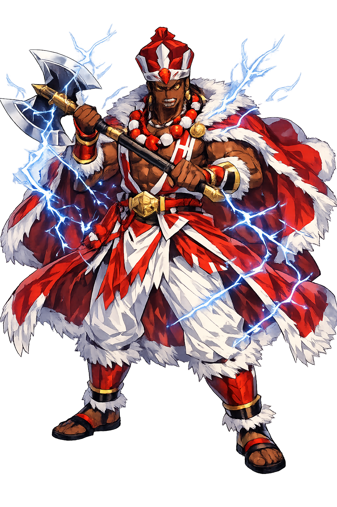

Unicode restoration and ASCII comparison
Ṣàngó
The name survives only in scholarly transliteration. Ṣàngó is the standard Yoruba romanisation, documented in academic sources — “He who strikes”. Its emphatic consonants and acute stress marks preserve distinctions lost in plain ASCII.
No indigenous writing system is securely attested for individual yoruba names. The form shown is a modern scholarly transliteration.
shango
Reduced to plain shango, the name loses everything that made it specific: emphatic consonants and acute stress marks. What remains is an ASCII string that machines can parse but that no longer speaks with its original voice.
Ṣàngó
The Unicode restoration recovers what ASCII flattened. Ṣàngó restores emphatic consonants and acute stress marks, returning the name to its original written dignity. The domain encodes to Punycode, but the browser displays the truth.
Ṣàngó.com → xn--ng-iia2fq79p.com
The non-ASCII characters in Ṣàngó are encoded while the ASCII remains visible. To the DNS, it is Punycode. To humanity, it is Ṣàngó.
How Ṣàngó is preserved in writing
No indigenous writing system is securely attested for individual yoruba names. The form shown is a modern scholarly transliteration.
Contribute scholarly provenance →How Ṣàngó was spoken
Fire, Royalty, and the Drum
Ṣàngó is the thunder-god and the deified fourth king of the Oyo Empire. In life he was a warrior-king; in death he became the storm itself, the fire that strikes from heaven and the drumbeat that makes the possessed dance. He is justice without bureaucracy, punishment without delay, and charisma so intense that it can kill.
His mythology is inseparable from history. The kings of Oyo traced their legitimacy to him, and his priests kept the sacred stones said to be thunderbolts he had hurled to earth.
He strikes the liar, the thief, and the oath-breaker; his fire is both weapon and verdict.
The ọ̀gẹ́ — his emblem of royal justice and the power to split heaven and earth.
He was king before he was god; his worship links divine power to political authority.
The bàtá drum calls him down; possession by Ṣàngó begins in the shoulders and feet.
Stories of Ṣàngó
Ṣàngó's mythology moves between the palace and the sky. He is a king who could not govern his own household, a husband of multiple orishas, and a storm whose justice is as dramatic as its noise.
Ṣàngó was the fourth Aláàfin (king) of Oyo. The traditions disagree about his end: some say he hanged himself after a political defeat, others that he was consumed by his own fire and ascended to heaven. What is consistent is that after his death he was deified, and subsequent Oyo kings ruled as his descendants. His capital at Koso became a major cult centre.
Ṣàngó is linked to several powerful female orishas. Ọya is said to have been his favourite companion in war, learning the secrets of fire from him. Ọṣun won his heart with honey and brass. Ọbà, his first wife, tried to win him back by cutting off her ear to make a stew, a myth that warns against sacrificing identity for love. These stories make Ṣàngó's mythology a theatre of desire, jealousy, and power.
In Yoruba courts and shrines, oaths sworn in Ṣàngó's name were binding because the thunder-god was believed to strike perjurers. The fear was not merely supernatural: it reinforced social order by making the sky itself a witness to human promises. His justice is swift, public, and terrifying.
Ṣàngó is the god who refuses to be ignored. His thunder does not negotiate; it announces. In a world of deferred justice and hidden corruption, he represents the fantasy — and the danger — of immediate consequence. To call on him is to ask that the truth be made loud.
Enter Extended Lore